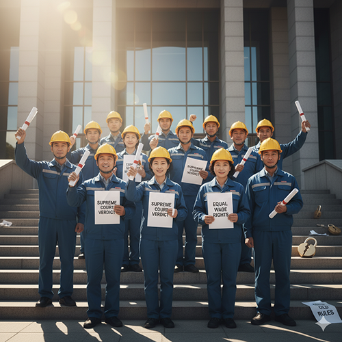

2024년 대법원 판결의 완전한 이행, 사측의 논리 왜곡을 바로잡는다
2024년 12월 19일, 대법원 전원합의체 판결(2020다247190)은 지난 10여 년간 왜곡된 통상임금 체계를 바로잡은 역사적인 전환점이었습니다.
그동안 ‘고정성’이라는 말은 사측이 노동자의 정당한 임금을 축소하기 위한 수단으로 악용되어 왔습니다. “지급일 현재 재직 중인 자”, “월 15일 이상 근무 시”와 같은 편법적 조건을 내세워, 우리가 매달 받아온 급식비와 각종 수당, 상여금조차 통상임금이 아니라고 우겨온 것입니다.
그러나 이번 대법원 판결은 그 낡은 빗장을 완전히 부쉈습니다. ‘재직 조건’과 같은 형식적 요건과 무관하게, 노동의 대가로 정기적·일률적으로 지급되는 금품은 통상임금이라는 대원칙을 다시 세웠습니다.
이 판결로 우리 조합은 기존 6개 항목에 더해 상여금, 급식비, 업무지원수당 등 8개 항목을 통상임금(분자)에 새롭게 포함시켰습니다. 이는 단순히 수당 몇 개가 늘어난 문제가 아니라, 우리 노동의 가치가 법적으로 인정받기 시작한 결정적 승리였습니다.
하지만 판결의 잉크가 마르기도 전에 사측은 또 다른 계산을 들고 나왔습니다. 통상임금 항목(분자)은 마지못해 인정하면서, 시급을 계산하는 기준인 시수(분모)를 바꾸겠다고 일방적으로 통보한 것입니다.
지난 11월 5일 공문에서 사측은 ‘고용노동부 지침’을 핑계로, 수십 년간 노사가 합의해 온 단체협약상의 209시간을 무시하고, '근무형태별 법정 시수(교대 216시간, 교번 242시간 등)'를 적용하겠다고 밝혔습니다.
이는 명백한 임금 삭감 시도입니다. 분모를 인위적으로 늘려 시급을 낮추는 방식으로, 대법원 판결의 효과를 사실상 무력화하려는 계산입니다.
사측은 ‘유리한 조건 취사선택 금지’라는 낯선 법리를 들이대며 이렇게 주장합니다. “노조가 통상임금 항목은 법(대법 판결)대로 확대하자면서, 왜 시수는 단협(209시간)을 고집하느냐. 이는 유리한 것만 골라 먹는 체리피킹이다.”
언뜻 공평해 보이는 이 논리는, 교묘하게 진실을 비틀고 있습니다.

우리의 입장은 명확합니다. 이것은 ‘취사선택’이 아닙니다. 이는 노동부의 행정해석 따위가 침범할 수 없는 헌법상 노동기본권이며, 근로기준법 제15조(유리한 조건 우선의 원칙)에 따른 정당한 권리 행사입니다.
근로기준법 제15조(이 법 위반의 근로계약)
① 이 법에서 정하는 기준에 미치지 못하는 근로조건을 정한 근로계약은 그 부분에 한하여 무효로 한다.
② 제1항에 따라 무효로 된 부분은 이 법에서 정한 기준에 따른다.
즉, 법은 ‘최저 기준’이며, 그보다 유리한 단체협약은 유효하고 존중되어야 한다는 뜻입니다. 더 나아가, 노동부의 행정해석은 사법부의 판결보다 하위에 있으며, 노사 자치의 최고 규범인 단체협약의 효력을 일방적으로 정지시킬 수 없습니다. 사측의 논리는 법리적으로도, 상식적으로도 설 자리가 없습니다.
2024년 대법원 판결로 8개 항목이 통상임금에서 제외된 기존 단협 조항은 법정 기준에 미달한 무효 조항이 되었습니다. 따라서 법에서 정한 기준(14개 항목)을 적용하는 것은 우리가 ‘선택’한 것이 아니라, 법이 강제한 시정조치입니다.
반면 시수 문제는 다릅니다. 교대·교번 근무자의 경우, 단협상 209시간은 사측이 주장하는 법정 시수(216시간, 242시간)보다 조합원에게 유리합니다. 법보다 유리한 단협 조항은 근로기준법이 보장하는 노동자의 권리이며, 사측은 이를 준수해야 합니다.
야간격일제 근무자의 경우, 근로기준법상 월 통상임금 산정 기준은 187시간입니다. 그러나 사측은 지금까지 단협의 일괄 기준인 209시간을 적용해 왔습니다. 이는 법이 보장한 기준보다 불리한 계산 방식으로, 결과적으로 근로기준법에 미달하는 시수를 적용해 온 것입니다.
이 잘못된 분모 적용으로 발생한 차액을 노조는 체불임금으로 회수하기 위한 대표소송을 진행할 예정입니다. 이는 단순한 법리 투쟁이 아니라, 조합원의 단협상 권리를 지키는 정당한 투쟁입니다.
법보다 불리한 것은 시정하고, 유리한 것은 지키는 것—이것이 우리의 원칙입니다.

사측이 말하는 ‘세트메뉴 협상’은 어불성설입니다. 통상임금의 ‘분자’, 즉 항목 확대는 이미 대법원의 시정조치로 확정된 사안이며 협상의 대상이 아닙니다. 사측은 이 확정된 항목을 건드릴 수 없게 되자, 억지로 ‘분모(시수)’를 바꿔 전체 계산을 줄이려는 꼼수를 내놓았습니다.
이는 마치 위생 문제로 교체 명령이 내려진 재료(불량한 빵)를 두고, ‘불량한 빵과 패티 2장 세트’와 ‘깨끗한 빵과 패티 1장 세트’ 중 하나를 고르라고 하는 격입니다. 위생 시정(항목 확대)은 '선택'이 아니라 '의무'이며, 패티의 장 수(209시간)는 이미 우리가 합의한 '권리'입니다. 사측은 이제 와서 의무를 이행하는 대가로 우리의 권리를 빼앗으려는 것입니다.
따라서 ‘분자 확대’는 법으로 이미 끝난 문제이며, 지금 우리가 싸워야 할 진짜 쟁점은 사측이 조작하려는 분모의 확대, 즉 시급을 낮추려는 계산입니다. 이 부분은 법리와 투쟁으로 정면 돌파해야 합니다.
노동조합 중앙쟁의대책위원회는 사측의 일방적인 단협 위반에 맞서, 교섭 요구와 함께 즉각적인 법적 대응에 돌입할 것입니다. 우리는 교대·교번 조합원을 위해 ‘단협 209시간’ 적용을 요구하는 임금 차액 지급 대표 소송과, 야간격일제 조합원을 위해 ‘법정 187시간’ 적용을 요구하는 임금 체불 청구 소송을 진행할 것입니다.
이는 모순이 아니라, “조합원에게 가장 유리한 조건을 적용한다”는 근로기준법의 대원칙을 일관되게 관철하는 것입니다.
동지 여러분, 사측의 그럴듯한 논리 뒤에는 언제나 임금 삭감의 계산이 숨어 있습니다. 우리의 요구는 법과 원칙에 근거한 정당한 권리입니다. 이 기사의 내용을 현장 곳곳에 전파해 주십시오. 집행부를 믿고, 향후 투쟁에 흔들림 없이 함께해 주십시오.
이 싸움은 한 사람의 임금이 아니라 모든 철도 노동자의 기준을 지키는 싸움입니다. 우리의 단결된 힘만이 사측의 꼼수를 분쇄하고 승리를 완성할 수 있습니다. 투쟁!